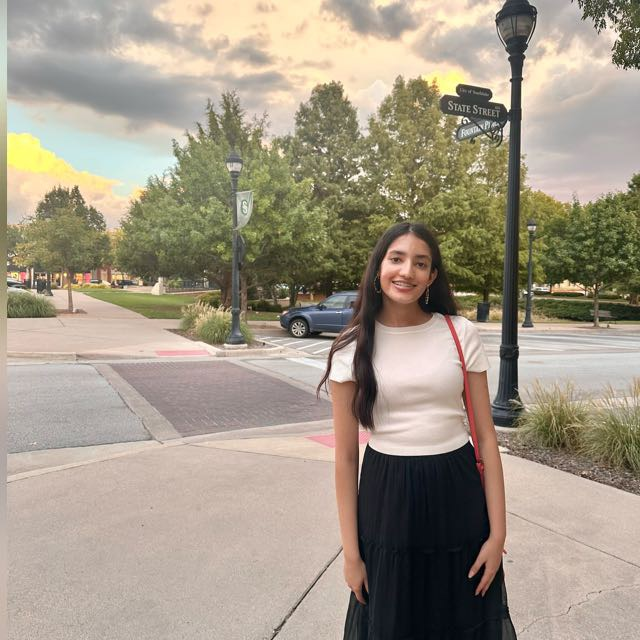

LinkedIn, User: raayamakhdumi
GitHub , User: raaya95-blip
makhdumi.raaya95@gmail.com, Email
RESUME
I am particularly interested in the intersection between biology and computer science in the development of BCIs, CRISPR and gene editing, and AI-powered algorithms of clinical research studies. After graduation, I plan on pursuing a PhD in molecular biotechnology and then working in the biotech industry in a field encapsulating both wet lab research and data science computing.